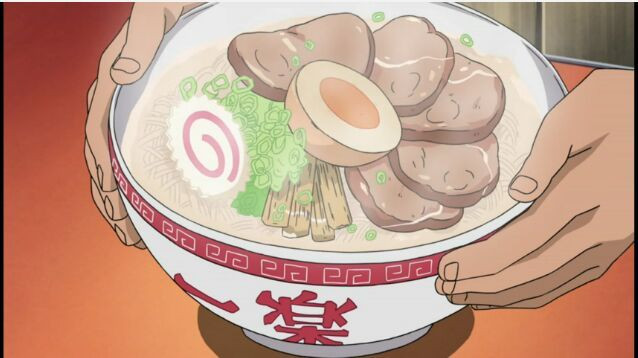

Naruto Ramen

Steps and Estimated Preparation Time
- Shoyu Tare (30 minutes)
- Pork Chashu (1 hour)
- Menma(Seasoned Bamboo Shoots) (30 minutes + Overnight)
- Seasoned Eggs (10 minutes + Overnight)
- Broth (4 hours + Overnight)
- Placing It All Together
Ingredients
2 Cups of Pork or Beef Broth (or make own with pork bones)
Kamaboko (preferably the one with the swirls)
Dried fish (Anchovy, Bonito, or Sardines)
Shoyu Tare
- Grind 1 oz of the dried fish of your choice and 1 large shiitake mushroom into powder using a food processor or blender.
- Next, place 2 1/2 cups of water into a large pot and place 2 oz of konbu. Once the water is simmering add the fish and mushroom powder. When it boils, remove from heat and strain.
- Measure out 6.5 oz of salt and 2 cups of dark soy sauce, and place into the strained liquid.
- Place in an airtight container and the tare can be kept in refrigerator for a few months
Pork Chashu
- Roll the pork belly, with the skin-side out and secure with cooking twine.
- Place pork belly on a hot skillet to brown all sides of the meat.
- Then place water, soy suace, white wine, and sugar into a large pot over heat to dissolve the sugar.
- Place the pork into the pot and bring to a boil, reducing the heat to medium and simmer for 25 minutes.
- Remove from heat and let cool down before letting it soak in the sauce overnight
Menma
- In a pan put water, mirin, and the chashu sauce you made for the pork chashu.
- Bring to a boil then reduce the heat and let simmer for 25 minutes.Remove from heat and let cool.
- Store in a container with the liquid up to a week.
Seasoned Eggs
- Bring a pot of water to a boil, slowly adding the eggs into the water for 7 minutes.
- Transfer the eggs into an ice bath for 3 minutes to chill, then peel.
- Mix the chashu seasoning liquid and mirin in a container, then place the eggs in.
- Refrigerate overnight. Store up to a few days.
Broth
- Buy bone broth, otherwise in a large pot boil the pork bone and fill the pot with water till it covers the bones.
- Bring the broth to a boil, reducing the heat to a simmer for 4 hours.
- Strain the broth into a container.
Assembly
- Get all the ingredients ready to go, boil hot water to cook the noodles and to heat up your serving bowl.
- Run the hot water over your bowl to heat up, then place the tare and soup into a pan to heat up before placing in the bowl.
- Cook the noodles in the boiling water and draining the noodles, shaking off as much of the excess water you can.Then place into the bowl with the tare and broth/
- Place 1 -2 pieces of chashu, a piece of nori, a slice of Kamaboko(aka naruto), 1 egg, and a couple pieces of menma.
- Serve.